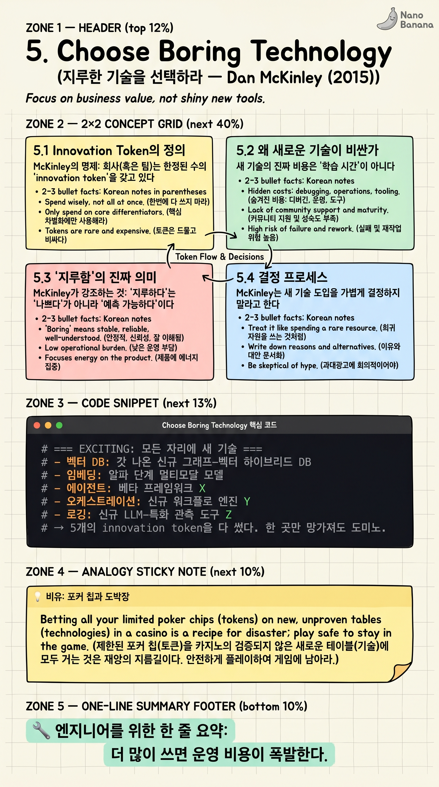

Choose Boring Technology

🎯 학습 목표
- Innovation Token이라는 정신적 모델을 자기 결정에 적용한다
- '새로운' 기술의 진짜 비용(운영·디버깅·고용)을 평가할 수 있다
- '지루함'이 실제로 의미하는 것을 안다 — '나쁘다'가 아니라 '예측 가능'이다
- AI 도구의 빠른 변화 속에서 어떤 부분을 '지루하게' 유지할지 판단한다
- 기술 도입 결정에서 ROI와 위험을 균형 있게 본다
Etsy의 엔지니어 Dan McKinley가 2015년에 쓴 글. 짧고 직설적이다. 핵심 개념 하나로 업계에 정신적 모델 하나를 박았다 — Innovation Token.
이 글의 가치는 AI 시대에 오히려 폭증했다. 매주 새로운 LLM, 매월 새로운 에이전트 프레임워크, 매분기 새로운 RAG 라이브러리가 나오는 지금, '무엇을 도입할 것인가'보다 '무엇을 도입하지 않을 것인가'가 더 중요한 결정이 됐다. 이 글은 그 결정의 나침반이다.
핵심 내용
5.1 Innovation Token의 정의
McKinley의 명제: 회사(혹은 팀)는 한정된 수의 'innovation token'을 갖고 있다. 그가 임의로 정한 숫자는 약 3개.
여기서 '혁신'은 '새로운 기술을 도입한다'를 뜻한다. 새 데이터베이스, 새 언어, 새 메시지 큐, 새 ML 프레임워크. 각각이 토큰 하나를 소비한다.
이 토큰은 무엇을 위해 쓰는가? 진짜로 차별화를 만드는 핵심 영역. '이걸 새 기술로 안 하면 우리 비즈니스가 안 된다' 수준의 영역. 그 외 모든 곳에선 지루한 기술을 써야 한다.
5.2 왜 새로운 기술이 비싼가
새 기술의 진짜 비용은 '학습 시간'이 아니다. 그것보다 훨씬 큰 비용들이 따라온다.
알려지지 않은 실패 모드(unknown failure modes): 새 기술은 어디서 어떻게 망가지는지 모른다. 5년 된 PostgreSQL은 모든 실패 사례가 stackoverflow에 있다. 신규 NoSQL은 당신이 첫 피해자가 될 수 있다.
고용 풀의 제약: 'Rust 5년 경력 + Postgres' 엔지니어를 뽑는 것과 'Rust 5년 + 우리 회사가 채택한 신규 그래프 DB X' 엔지니어를 뽑는 것은 난이도가 다르다.
커뮤니티와 도구의 미성숙: 새 기술은 디버거·모니터링·테스팅 도구가 부족하다. 모든 게 직접 만들어야 하는 일이다.
유지보수의 지속: 새 기술은 자주 breaking change를 낸다. 5년 된 기술은 안정적이다.
5.3 '지루함'의 진짜 의미
McKinley가 강조하는 것: '지루하다'는 '나쁘다'가 아니라 '예측 가능하다'이다. 알려진 실패 모드, 알려진 성능 특성, 알려진 운영 비용.
Boring = 잘 알려진 + 검증된 + 운영 비용을 추정 가능. 예: PostgreSQL, Redis, Linux, Bash, Python, Java, REST.
Exciting = 알려지지 않은 + 검증되지 않은 + 운영 비용을 추정 불가. 예: 갓 나온 분산 데이터베이스, 알파 단계 ML 프레임워크, 베타 에이전트 라이브러리.
흥미로운 점: 지루한 기술도 한때는 흥미로웠다. PostgreSQL이 1996년엔 흥미로운 신기술이었다. 시간이 그것을 지루하게 만들었다 — 그 자체가 가치다.
5.4 결정 프로세스
McKinley는 새 기술 도입을 가볍게 결정하지 말라고 한다. 구체적 질문 세트를 제시한다.
1. 이 기술이 해결하는 문제가 우리 핵심인가? 핵심이 아니면 토큰 쓸 가치 없다.
2. 현재 도구로 80% 가능한가? 가능하면 그걸로 가라. 마지막 20%를 위해 토큰을 쓰지 마라.
3. 실패하면 어떻게 되돌릴 수 있는가? 1년 뒤 이 기술이 deprecated 되면 마이그레이션이 가능한가?
4. 운영 비용을 추정할 수 있는가? 새 기술은 운영 비용이 미지수다. 추정 불가는 곧 위험이다.
5. 누가 새벽 3시에 디버그할 것인가? 새 기술은 인터넷에 답이 없을 수 있다.
5.5 AI 에이전트 시대의 적용
2024-2025년 AI 도구 풍경은 McKinley의 글이 가장 빛나는 시대다. 매주 새로운 에이전트 프레임워크, 새로운 RAG 라이브러리, 새로운 모델이 나온다.
현실: 대부분 6개월 뒤에 사라진다. LangChain 0.1과 0.2 사이의 breaking change에 시간을 다 쓴 팀이 한둘이 아니다.
Boring AI 선택의 예: (a) 모델은 안정된 메이저 벤더 API (Anthropic, OpenAI). (b) 인터페이스는 단순한 messages API. (c) 도구는 잘 검증된 OS·DB·로깅. (d) 자체 에이전트 루프는 단순한 while + 함수 호출.
Exciting AI를 토큰으로 살 가치가 있는 경우: 자기 비즈니스의 핵심 차별화 영역이고, 다른 방법으론 안 되며, 실패해도 되돌릴 수 있을 때. 그 외 모든 곳에서는 가장 지루한 선택을 하라.
💡 비유로 이해하기
당신은 칩 3개를 들고 도박장에 들어간다. 모든 테이블이 '새 기술'을 걸 수 있다. 한 테이블은 '새 데이터베이스'를 걸고 대박/쪽박을 가린다. 다른 테이블은 '새 ML 프레임워크', 또 다른 테이블은 '새 에이전트 라이브러리'.
칩은 3개뿐이다. 어느 테이블에 걸 것인가? 답은 '내가 진짜 알고 싶고, 잘하면 게임을 바꿀 수 있는 한두 테이블'이다. 나머지 테이블에선 그냥 룰렛(boring) 빨강에 1배수 베팅을 한다. 안전하고 예측 가능하다.
초보 도박꾼은 모든 테이블에 한 칩씩 다 건다. 흥미진진하지만 칩이 빨리 사라진다. 시니어는 한두 테이블에 집중한다. 엔지니어링도 같다. 흥미로움이 곳곳에서 유혹할 때, 'innovation token이 3개뿐이다'를 기억하라.
💻 코드 예시
같은 RAG 시스템을 (a) 흥미로운(exciting) 스택과 (b) 지루한(boring) 스택으로 구현한다. 토큰을 어디에 썼는지가 핵심이다.
# === EXCITING: 모든 자리에 새 기술 ===
# - 벡터 DB: 갓 나온 신규 그래프-벡터 하이브리드 DB
# - 임베딩: 알파 단계 멀티모달 모델
# - 에이전트: 베타 프레임워크 X
# - 오케스트레이션: 신규 워크플로 엔진 Y
# - 로깅: 신규 LLM-특화 관측 도구 Z
# → 5개의 innovation token을 다 썼다. 한 곳만 망가져도 도미노.
# === BORING: 핵심 한 곳에만 토큰 ===
import anthropic # boring: 안정된 메이저 API
import psycopg2 # boring: 20년 된 RDBMS
from pgvector.psycopg2 import register_vector # boring: pg 확장
import logging # boring: 표준 라이브러리
def rag_answer(question: str) -> str:
# 1) embed (boring API 호출)
embedding = embed_with_provider(question)
# 2) retrieve (boring SQL)
conn = psycopg2.connect(DB_URL)
cur = conn.cursor()
cur.execute("SELECT chunk FROM docs ORDER BY embedding <=> %s LIMIT 5",
(embedding,))
context = "\n".join(r[0] for r in cur.fetchall())
# 3) generate (Anthropic SDK)
client = anthropic.Anthropic()
msg = client.messages.create(
model="claude-opus-4-7",
max_tokens=1024,
messages=[{"role": "user",
"content": f"{context}\n\nQ: {question}"}],
)
return msg.content[0].text
# → innovation token 1개(LLM 모델)만 사용. 나머지는 다 boring.
exciting 버전은 디버깅·모니터링·롤백이 다 위험하다. 한 부분이 망가지면 전체 파이프라인이 잘 안 보인다. boring 버전은 PostgreSQL 로그, pg_stat, Python logging 같은 잘 알려진 도구로 디버깅 가능하다. innovation token은 '진짜로 차별화를 만드는' 한 곳 — LLM 모델 자체 — 에만 썼다. 같은 결과를 내면서 운영 비용은 압도적으로 낮다.
🏭 현업에서의 평가
✅ 시니어가 보는 것
- 기술 선택 결정에서 운영 비용·실패 모드·복구 경로를 함께 평가하는지
- '우리 핵심 차별화'와 '그 외'를 명확히 구분하는지
- Innovation token이 다 떨어졌을 때 자제력 발휘
- 최근 도입을 거절한 기술과 그 이유를 명확히 설명 가능
⚠️ 레드 플래그
- 최신 GitHub trending을 모두 도입하려는 충동
- '이게 더 elegant하니까' 같은 미적 이유로 마이그레이션
- 프로덕션에 알파/베타 라이브러리를 핵심 의존성으로 채택
- 기술 도입 결정에서 'rollback plan'이 없음
🎤 예상 인터뷰 질문
- 최근 거절한 기술 도입 결정과 그 이유는?
- 현재 시스템의 innovation token이 어디에 쓰였는지 5개 이내로 나열해 주세요
- AI 에이전트 라이브러리 풍경에서 무엇을 'boring'으로 분류하고 무엇을 'exciting'으로 분류하시나요?
✨ 핵심 요약
토큰은 ~3개
더 많이 쓰면 운영 비용이 폭발한다.
Boring ≠ Bad
Boring = Predictable. 알려진 위험을 운영한다.
새 기술의 진짜 비용
운영·디버깅·고용·롤백. 학습 시간은 빙산의 일각.
핵심에만 토큰
차별화 영역에만 새 기술. 그 외엔 가장 지루한 선택.
Unknown failure modes
새 기술은 어디서 어떻게 망가지는지 모른다.
AI 시대 더 중요
프레임워크가 매주 등장·소멸하는 시대일수록 자제가 자산.
거절도 결정
도입하지 않은 기술이 시스템을 살린다.
시간이 지루함을 만든다
오늘의 안정된 기술도 한때 흥미로웠다. 시간이 무료 가치를 더한다.